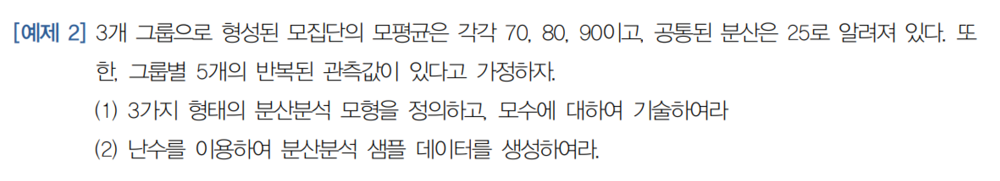
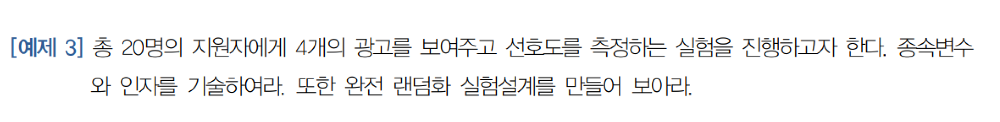
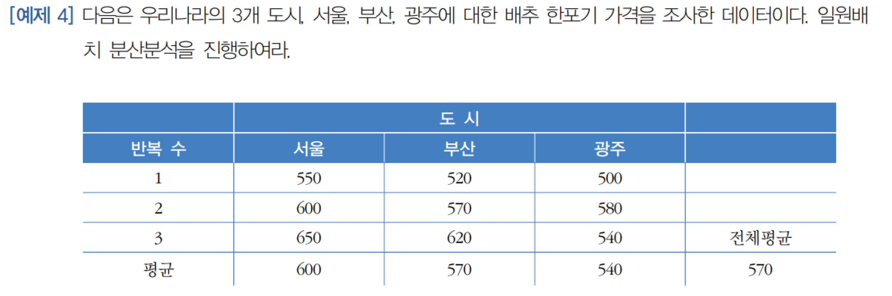
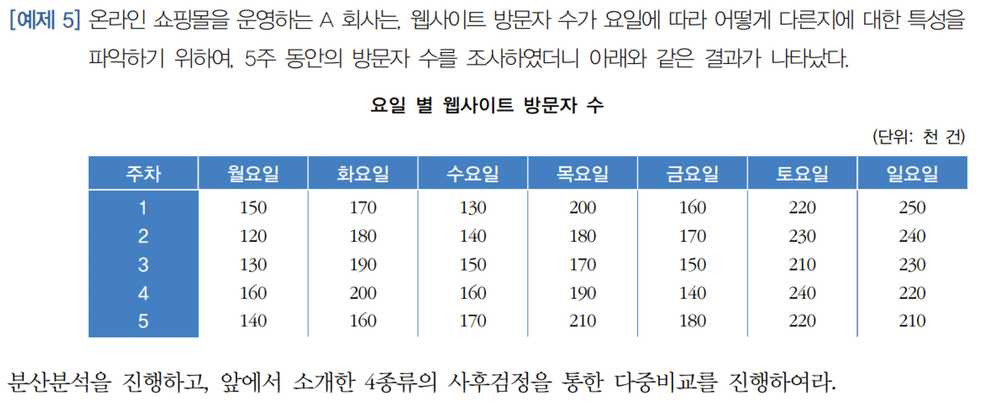

set.seed(12)
Grp1 = rnorm(5,70,5)
Grp2 = rnorm(5,80,5)
Grp3 = rnorm(5,90,5)
df1 = data.frame(Grp1,Grp2,Grp3)
df1 = signif(df1,3)
df1 Grp1 Grp2 Grp3
1 62.6 78.6 86.1
2 77.9 78.4 83.5
3 65.2 76.9 86.1
4 65.4 79.5 90.1
5 60.0 82.1 89.2
set.seed(12)
Grp1 = rnorm(5,70,5)
Grp2 = rnorm(5,80,5)
Grp3 = rnorm(5,90,5)
df1 = data.frame(Grp1,Grp2,Grp3)
df1 = signif(df1,3)
df1 Grp1 Grp2 Grp3
1 62.6 78.6 86.1
2 77.9 78.4 83.5
3 65.2 76.9 86.1
4 65.4 79.5 90.1
5 60.0 82.1 89.2signif(mean(Grp1),4) # 각 그룹의 평균[1] 66.22signif(mean(Grp2),4)[1] 79.11signif(mean(Grp3),4)[1] 87.01signif((mean(Grp1)+mean(Grp2)+mean(Grp3))/3,4) # 전체 평균[1] 77.45| 반복수 | 그룹1 | 그룹2 | 그룹3 | |
|---|---|---|---|---|
| 1 | 62.6 | 78.6 | 86.1 | |
| 2 | 77.9 | 78.4 | 83.5 | |
| 3 | 65.2 | 76.9 | 86.1 | |
| 4 | 65.4 | 79.5 | 90.1 | |
| 5 | 60.0 | 82.1 | 89.2 | 전체평균 |
| 평균 | 66.22 | 79.11 | 87.01 | 77.45 |
df2 = stack(df1)
df2 values ind
1 62.6 Grp1
2 77.9 Grp1
3 65.2 Grp1
4 65.4 Grp1
5 60.0 Grp1
6 78.6 Grp2
7 78.4 Grp2
8 76.9 Grp2
9 79.5 Grp2
10 82.1 Grp2
11 86.1 Grp3
12 83.5 Grp3
13 86.1 Grp3
14 90.1 Grp3
15 89.2 Grp3ggline(df2, x = "ind", y = "values", add = c("mean_sd", "jitter"), title = "Data in ANOVA model", ylab ="", xlab = "")
jitter는 점이 겹치지 않도록 양 옆으로 점을 분산시킨다.
아래는 jitter 옵션이 적용되지 않은 그래프
ggline(df2, x = "ind", y = "values", add = c("mean_sd"), title = "Data in ANOVA model", ylab ="", xlab = "")
mean_sd 옵션은 평균과 표준편차를 표시하고 평균을 선으로 연결한다.
아래는 mean_sd 옵션을 제외한 그래프(모든 add 옵션 없음)
ggline(df2, x = "ind", y = "values", title = "Data in ANOVA model", ylab ="", xlab = "")
jitter만 적용시킨 그래프는 아래와 같다.
ggline(df2, x = "ind", y = "values", add = "jitter", title = "Data in ANOVA model", ylab ="", xlab = "")
one-way ANOVA는 완전랜덤화 실험설계(CRD: Complete Randomized Design)를 가정한다.

set.seed(12)
x = 1:20
x1 = sample(x,5) # 1에서 20까지의 숫자중 5개의 표본을 무작위로 뽑는다.
x1[1] 2 16 14 5 17set.seed(12)
x2 = sample(x[-x1],5) # 1에서 20까지의 숫자중 x1을 제외한 5개의 표본을 무작위로 뽑는다.
x2[1] 3 12 9 13 7set.seed(12)
x3 = sample(x[-c(x1,x2)],5) # 1에서 20까지의 숫자중 x1, x2를 제외한 5개의 표본을 무작위로 뽑는다.
x3[1] 4 15 6 11 10set.seed(12)
x4 = sample(x[-c(x1,x2,x3)],5) # 1에서 20까지의 숫자중 x1, x2, x3를 제외한 5개의 표본을 무작위로 뽑는다.
x4[1] 8 20 18 1 19
Group = rep(c("Seoul","Busan","Gwangju"), each = 3)
X = c(550,600,650,520,570,620,500,580,540)
OneWay = aov(X ~ Group) # aov()로 분산분석 실행 및 결과를 OneWay 객체에 저장, 일원 배치 분산분석이므로 독립변수 1개.
anova(OneWay) #anova()로 분산분석표 요청Analysis of Variance Table
Response: X
Df Sum Sq Mean Sq F value Pr(>F)
Group 2 5400 2700 1.2273 0.3574
Residuals 6 13200 2200 \[X_{ij}=\mu_j+\epsilon_{ij}\]
aggregate(X, by = list(Group), mean) # 수준별 평균모형(첫번째 형태의 분산분석 모형) Group.1 x
1 Busan 570
2 Gwangju 540
3 Seoul 600by 옵션은 list 값을 요구하기 때문에, Group을 리스트로 만들어 준다. 위 코드를 말로 표현하자면, ‘X의 값을 Group별로 평균한다.’ 로 표현할 수 있다.
\[X_{ij} = \mu + \tau_j + \epsilon_{ij}\]
model.tables(OneWay) # 효과모형Tables of effects
Group
Group
Busan Gwangju Seoul
0 -30 30 \(\mu\)에 대한 추정량은 제공되지 않는다. 그러나 각 그룹의 \(\tau_j\)의 추정량은 제공된다. 그러므로 \(\mu\)에 대한 추정량이 570임을 알 수 있다.(Busan의 \(\tau_j\)가 0 이므로 \(\mu\) = Busan 그룹의 평균)
\[X_{ij} = \mu_1 + \tau_j + \epsilon_{ij}\]
OneWay$coefficients (Intercept) GroupGwangju GroupSeoul
570 -30 30 여기서 레퍼런스그룹은 알파벳, 가나다 순으로 첫번째 수준이 레퍼런스 그룹이 된다. 항상 레퍼런스 그룹을 먼저 식별해야 한다. 여기선 부산이 레퍼런스 그룹이다.

Mon = c(150, 120, 130, 160, 140)
Tue = c(170, 180, 190, 200, 160)
Wed = c(130, 140, 150, 160, 170)
Thr = c(200, 180, 170, 190, 210)
Fri = c(160, 170, 150, 140, 180)
Sat = c(220, 230, 210, 240, 220)
Sun = c(250, 240, 230, 220, 210)
df1 = data.frame(Mon, Tue, Wed, Thr, Fri ,Sat, Sun)df2 = stack(df1)M1 = aov(values ~ ind,df2)
anova(M1)Analysis of Variance Table
Response: values
Df Sum Sq Mean Sq F value Pr(>F)
ind 6 37040 6173.3 26.511 2.516e-10 ***
Residuals 28 6520 232.9
---
Signif. codes: 0 '***' 0.001 '**' 0.01 '*' 0.05 '.' 0.1 ' ' 1F 검정에 의한 p-value가 5% 유의 수준 보다 작기 때문에 요일별 평균값이 동일하다는 귀무가설을 기각한다. 이제 사후검정을 통해 어떤 요일의 평균값이 어떻게 다른지 확인해봐야 한다.
model.tables(M1)Tables of effects
ind
ind
Mon Tue Wed Thr Fri Sat Sun
-42 -2 -32 8 -22 42 48 모수를 봤을 때, 토요일과 일요일에 웹사이트 방문자수가 많다. 이제 다중비교를 통해 통계적 유의성을 확인해보자.
TukeyHSD(M1) Tukey multiple comparisons of means
95% family-wise confidence level
Fit: aov(formula = values ~ ind, data = df2)
$ind
diff lwr upr p adj
Tue-Mon 40 9.385599 70.614401 0.0047067
Wed-Mon 10 -20.614401 40.614401 0.9408934
Thr-Mon 50 19.385599 80.614401 0.0003072
Fri-Mon 20 -10.614401 50.614401 0.3952842
Sat-Mon 84 53.385599 114.614401 0.0000000
Sun-Mon 90 59.385599 120.614401 0.0000000
Wed-Tue -30 -60.614401 0.614401 0.0576183
Thr-Tue 10 -20.614401 40.614401 0.9408934
Fri-Tue -20 -50.614401 10.614401 0.3952842
Sat-Tue 44 13.385599 74.614401 0.0016009
Sun-Tue 50 19.385599 80.614401 0.0003072
Thr-Wed 40 9.385599 70.614401 0.0047067
Fri-Wed 10 -20.614401 40.614401 0.9408934
Sat-Wed 74 43.385599 104.614401 0.0000005
Sun-Wed 80 49.385599 110.614401 0.0000001
Fri-Thr -30 -60.614401 0.614401 0.0576183
Sat-Thr 34 3.385599 64.614401 0.0221334
Sun-Thr 40 9.385599 70.614401 0.0047067
Sat-Fri 64 33.385599 94.614401 0.0000066
Sun-Fri 70 39.385599 100.614401 0.0000013
Sun-Sat 6 -24.614401 36.614401 0.9955049DescTools::DunnettTest(values~ind,df2,control = "Tue") # 레퍼런스 그룹을 화요일로 선택
Dunnett's test for comparing several treatments with a control :
95% family-wise confidence level
$Tue
diff lwr.ci upr.ci pval
Mon-Tue -40 -66.37374 -13.626263 0.00159 **
Wed-Tue -30 -56.37374 -3.626263 0.02105 *
Thr-Tue 10 -16.37374 36.373737 0.79726
Fri-Tue -20 -46.37374 6.373737 0.19178
Sat-Tue 44 17.62626 70.373737 0.00055 ***
Sun-Tue 50 23.62626 76.373737 9.3e-05 ***
---
Signif. codes: 0 '***' 0.001 '**' 0.01 '*' 0.05 '.' 0.1 ' ' 1DescTools::PostHocTest(M1, method = "lsd")
Posthoc multiple comparisons of means : Fisher LSD
95% family-wise confidence level
$ind
diff lwr.ci upr.ci pval
Tue-Mon 40 20.2307106 59.7692894 0.00028 ***
Wed-Mon 10 -9.7692894 29.7692894 0.30900
Thr-Mon 50 30.2307106 69.7692894 1.7e-05 ***
Fri-Mon 20 0.2307106 39.7692894 0.04756 *
Sat-Mon 84 64.2307106 103.7692894 1.9e-09 ***
Sun-Mon 90 70.2307106 109.7692894 4.4e-10 ***
Wed-Tue -30 -49.7692894 -10.2307106 0.00429 **
Thr-Tue 10 -9.7692894 29.7692894 0.30900
Fri-Tue -20 -39.7692894 -0.2307106 0.04756 *
Sat-Tue 44 24.2307106 63.7692894 9.2e-05 ***
Sun-Tue 50 30.2307106 69.7692894 1.7e-05 ***
Thr-Wed 40 20.2307106 59.7692894 0.00028 ***
Fri-Wed 10 -9.7692894 29.7692894 0.30900
Sat-Wed 74 54.2307106 93.7692894 2.4e-08 ***
Sun-Wed 80 60.2307106 99.7692894 5.1e-09 ***
Fri-Thr -30 -49.7692894 -10.2307106 0.00429 **
Sat-Thr 34 14.2307106 53.7692894 0.00149 **
Sun-Thr 40 20.2307106 59.7692894 0.00028 ***
Sat-Fri 64 44.2307106 83.7692894 3.4e-07 ***
Sun-Fri 70 50.2307106 89.7692894 6.8e-08 ***
Sun-Sat 6 -13.7692894 25.7692894 0.53917
---
Signif. codes: 0 '***' 0.001 '**' 0.01 '*' 0.05 '.' 0.1 ' ' 1DescTools::PostHocTest(M1, method = "bonferroni")
Posthoc multiple comparisons of means : Bonferroni
95% family-wise confidence level
$ind
diff lwr.ci upr.ci pval
Tue-Mon 40 7.761622 72.238378 0.00598 **
Wed-Mon 10 -22.238378 42.238378 1.00000
Thr-Mon 50 17.761622 82.238378 0.00036 ***
Fri-Mon 20 -12.238378 52.238378 0.99873
Sat-Mon 84 51.761622 116.238378 3.9e-08 ***
Sun-Mon 90 57.761622 122.238378 9.2e-09 ***
Wed-Tue -30 -62.238378 2.238378 0.09004 .
Thr-Tue 10 -22.238378 42.238378 1.00000
Fri-Tue -20 -52.238378 12.238378 0.99873
Sat-Tue 44 11.761622 76.238378 0.00194 **
Sun-Tue 50 17.761622 82.238378 0.00036 ***
Thr-Wed 40 7.761622 72.238378 0.00598 **
Fri-Wed 10 -22.238378 42.238378 1.00000
Sat-Wed 74 41.761622 106.238378 5.0e-07 ***
Sun-Wed 80 47.761622 112.238378 1.1e-07 ***
Fri-Thr -30 -62.238378 2.238378 0.09004 .
Sat-Thr 34 1.761622 66.238378 0.03119 *
Sun-Thr 40 7.761622 72.238378 0.00598 **
Sat-Fri 64 31.761622 96.238378 7.2e-06 ***
Sun-Fri 70 37.761622 102.238378 1.4e-06 ***
Sun-Sat 6 -26.238378 38.238378 1.00000
---
Signif. codes: 0 '***' 0.001 '**' 0.01 '*' 0.05 '.' 0.1 ' ' 1